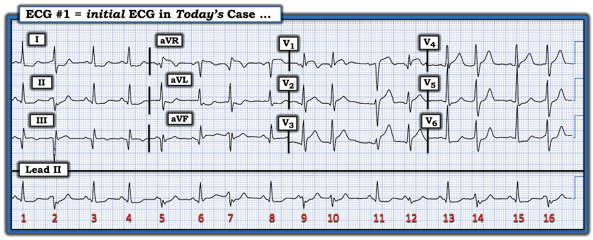
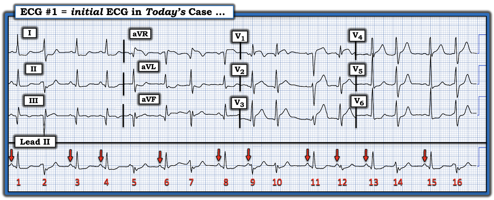
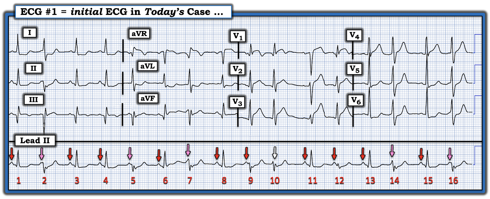
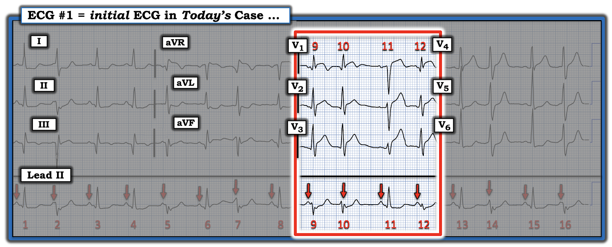
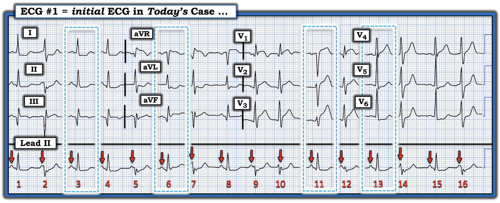
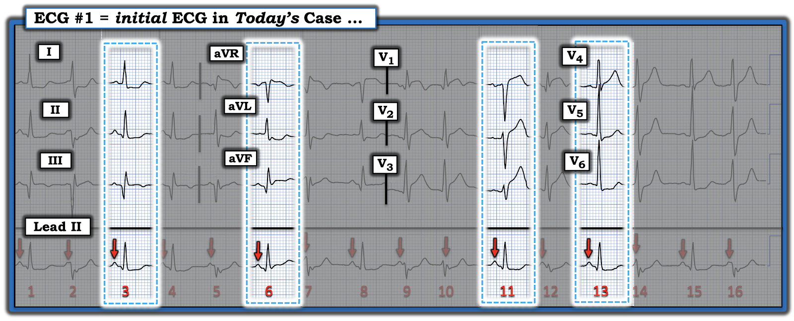

ECG Blog #551 — Có nhát nào "bình thường" không?
Tôi nhận được điện tâm đồ ở Hình 1 — chỉ được cho biết đây là của một người đàn ông trung niên đến khám vì CP cấp (đau ngực – Chest Pain).
CÂU HỎI:
- Chuyện gì đang xảy ra?
- Nên tiếp cận việc đọc điện tâm đồ này như thế nào?
- Đây là nhịp gì?


==============================
Cách tiếp cận của tôi:
Như mọi khi (giả định bệnh nhân ổn định và không cần sốc điện chuyển nhịp ngay lập tức) — tôi ưu tiên một cách tiếp cận hệ thống, bắt đầu bằng việc nhìn nhanh vào nhịp ==> "Hãy để ý Ps,Qs và 3Rs" (như đã ôn trong ECG Blog #185).
- Tôi thay đổi thứ tự xem xét 5 thông số MẤU CHỐT này — tùy theo những đặc điểm riêng của nhịp (và tùy theo thông số nào trong 5 thông số này dễ nhận ra nhất).
- Trong ca hôm nay, khi nhìn vào dải nhịp dài chuyển đạo II — tôi bị ấn tượng bởi sự thay đổi hình dạng QRS gần như từng nhát một. Dù vậy — nhiều nhát trông có vẻ hẹp, gợi ý rằng nhịp nền là nhịp trên thất.
- Sóng P có hiện diện!
ĐIỂM THEN CHỐT (PEARL) #1: Bước đơn giản là đánh dấu sóng P thường giúp ích đến bất ngờ trong việc tìm ra điều gì đang xảy ra. Tôi đã làm việc này ở Hình 2 (các mũi tên ĐỎ đánh dấu những sóng P mà tôi chắc chắn nhận ra được).
- Chúng ta học được gì từ Hình 2?


==============================
Những gì học được từ Hình 2:
- Nhịp nền trên bản ghi hôm nay có vẻ là nhịp xoang — vì thấy các sóng P dương với khoảng PR hằng định và bình thường đứng trước các nhát #1,3,4,6,8,11,13 và 15.
- Tôi tìm 2 nhát dẫn truyền từ xoang liên tiếp nhau — vì nếu nhịp nhĩ nền đều, việc thấy 2 nhát dẫn truyền từ xoang liên tiếp sẽ gợi ý khoảng P-P là bao nhiêu (Ta thấy điều này ở nhát #3 và 4). Khoảng R-R giữa nhát #3 và 4 chỉ hơn 3 ô lớn một chút — gợi ý có một nhịp xoang nền với tần số ~90/phút.
- LƯU Ý: Dù không thấy rõ sóng P trên toàn bộ bản ghi ở Hình 2 — khoảng P-P hằng định giữa các sóng P mũi tên ĐỎ liên tiếp mà ta thực sự chắc chắn thấy được gợi ý rằng nhiều khả năng có một nhịp sóng P nền đều đặn.
ĐIỂM THEN CHỐT (PEARL) #2:
Cho đến nay, cách tiết kiệm thời gian nhất để đọc bản ghi phức tạp hôm nay — là dùng compa đo (calipers)! Nói đơn giản — tôi đã không thể xác định nhịp hôm nay với bất kỳ mức độ chắc chắn nào nếu không dùng compa đo. Và nhờ dùng compa đo — tôi mất đúng không quá 5 giây để đi đến những kết luận trở nên hiển nhiên khi xem dải nhịp dài chuyển đạo II mà tôi đã đánh dấu ở Hình 3:
- Nhịp nhĩ nền là đều.
- Ngoài các sóng P mũi tên ĐỎ mà ta chắc chắn thấy — các mũi tên HỒNG ở Hình 3 đánh dấu các sóng P xoang "đúng lúc" làm biến dạng một phần nào đó của QRS.
- Dù không thấy biến dạng nào ở nhát #10 — vẫn hợp lý khi cho rằng một sóng P xoang "đúng lúc" khác bị ẩn hoàn toàn bên trong nhát này ( = mũi tên TRẮNG vẽ trên nhát #10).
- ĐIỂM THEN CHỐT (PEARL) #3: Khoảng PR của tất cả các sóng P "đúng lúc" mũi tên HỒNG đều quá ngắn để có thể dẫn truyền bình thường. Điều này xác lập sự hiện diện của phân ly nhĩ thất từng lúc — và điều này chứng minh rằng các nhát #2,5,7,14 và 16 đều phải là nhát thất.
- Lý do hình dạng QRS của các nhát thất này hơi khác nhau là có một mức độ hỗn hợp (fusion) giữa các sóng P dẫn truyền từ xoang và các nhát thất xuất hiện ngay sau đó, sớm đến mức chúng cắt ngang sự dẫn truyền của các xung động khởi phát từ xoang qua tâm thất (Xem ECG Blog #128 — để biết thêm về nhát hỗn hợp).
- Nhát #10 khó là nhát hỗn hợp — vì sóng P "đúng lúc" mũi tên TRẮNG xuất hiện quá muộn để có thể vào tâm thất kịp thời mà dẫn truyền. Việc sóng P mũi tên TRẮNG đến tâm thất quá muộn để dẫn truyền cho ta biết các PVC trông như thế nào ở chuyển đạo II — và do đó cũng cho biết các PVC trông như thế nào ở các chuyển đạo V1,V2,V3 ghi đồng thời.


==============================
Hãy tập trung một chút vào 4 chuyển đạo ghi đồng thời này ( = các chuyển đạo V1,V2,V3 — và chuyển đạo II ở dải nhịp dài) Để cho rõ — tôi trình bày việc này cho dễ theo dõi ở Hình 4.
- Giờ đây hẳn đã rõ từ Hình 4 — rằng nhát #11 trông khác với 3 nhát còn lại ở các chuyển đạo V1,V2,V3 và ở chuyển đạo II dài. Đó là vì nhát #11 này là xung động dẫn truyền từ xoang bình thường duy nhất trong 4 nhát này.
- Các nhát #9,10 và 12 là nhát thất (có lẽ kèm một mức độ hỗn hợp ở nhát #9 và 12).


==============================
Tổng hợp lại tất cả:
Giờ ta đã biết từ Hình 4 rằng nhát #11 trên dải nhịp dài chuyển đạo II thể hiện hình dạng QRST của một nhát dẫn truyền từ xoang bình thường — Ta có thể quay lại Hình 3 để tìm xem trong 16 nhát của điện tâm đồ hôm nay, những nhát nào được dẫn truyền từ xoang mà không bị hỗn hợp một phần với các nhát thất:
- Các nhát #1,3,4,6,8,11,13 và 15 đều là nhát dẫn truyền thuần túy từ xoang.
- ĐIỂM THEN CHỐT (PEARL) #4: Đánh giá hình dạng sóng ST-T để tìm các thay đổi thiếu máu cục bộ cấp tốt nhất là thực hiện trên các nhát xoang dẫn truyền bình thường.
Ở Hình 5 — tôi đã chọn các nhát xoang dẫn truyền đồng thời ở mỗi nhóm trong 4 nhóm chuyển đạo chính (nằm trong 4 hình chữ nhật viền chấm XANH).


Để dễ quan sát hình dạng QRST ở mỗi nhóm trong 4 nhóm chuyển đạo — tôi đã chỉnh sửa Hình 5 bằng cách làm mờ các nhát khác ở Hình 6.
- Chẳng phải giờ đây dễ nhận ra hơn nhiều tình trạng ST chênh lên cấp rõ rệt ở các chuyển đạo phía trước sao? ( = nhát #11 như thấy ở các chuyển đạo V1,V2,V3 trên Hình 6)?
- Hoàn chỉnh hình ảnh xoáy trước tim (Precordial Swirl) vốn có giá trị chẩn đoán tắc LAD đoạn gần cấp (Xem ECG Blog #380 — để biết thêm về xoáy trước tim) — là ST chênh xuống ở các chuyển đạo ngực bên V5,V6 (nhát #13).
- Các nhát #3 và #6 dẫn truyền từ xoang bình thường cho thấy sóng Q lớn kèm ST chênh lên nhẹ ở các chuyển đạo dưới III và aVF — và ST chênh xuống ở các chuyển đạo I,II,aVL. Cũng có một ít ST chênh lên ở chuyển đạo aVR.


==============================
KẾT LUẬN CA BỆNH:
Đáng tiếc — tôi không có thông tin diễn tiến và kết quả thông tim. Tuy vậy, với bệnh sử CP mới xuất hiện — tôi tự tin đưa ra các kết luận sau từ điện tâm đồ ban đầu của ca hôm nay, mà tôi đặt lại một lần nữa ở Hình 7.
- Nhịp nền ở Hình 7 là nhịp xoang.
- Lý do hình dạng QRS thay đổi thường xuyên trên dải nhịp dài chuyển đạo II là có AIVR (nhịp tự thất gia tốc – Accelerated IdioVentricular Rhythm) chồng lên, với tần số ~115/phút. Như đã ôn trong ECG Blog #108 — trong bối cảnh một OMI cấp đang tiến triển, AIVR thường là một rối loạn nhịp do "tái tưới máu", thường chỉ thoáng qua và thường không cần điều trị chống loạn nhịp đặc hiệu. Thay vào đó, cần thông tim kèm PCI kịp thời để ngăn động mạch "thủ phạm" tắc lại.
- Lý do điện tâm đồ hôm nay khó đọc đến vậy — là sự xuất hiện thường xuyên của các nhát hỗn hợp, dẫn đến hình dạng QRS liên tục thay đổi.
- Làm mờ các nhát hỗn hợp này (như đã làm ở Hình 6) giúp dễ nhận ra tắc LAD đoạn gần cấp (hình ảnh "xoáy" trước tim (Precordial Swirl) — với ST chênh lên tối cấp ở các chuyển đạo phía trước và ST chênh xuống dạng dẹt ở các chuyển đạo V5,V6 — như đã mô tả trong ECG Blog #380).
- Sóng Q lớn ở thành dưới + ST chênh xuống ở các chuyển đạo I,II,aVL,V5,V6 kèm ST chênh lên ở chuyển đạo aVR gợi ý có thể có bệnh nhiều nhánh mạch vành (và/hoặc nhồi máu thành dưới cũ) so với tắc LAD diện rộng kiểu "vòng qua mỏm" (wraparound). Nhưng thông điệp đã rõ ==> tắc LAD đoạn gần cấp, cần thông tim kèm PCI ngay lập tức.

==================================
Lời cảm ơn: Xin cảm ơn người đã đóng góp ẩn danh ca bệnh hôm nay.
==================================